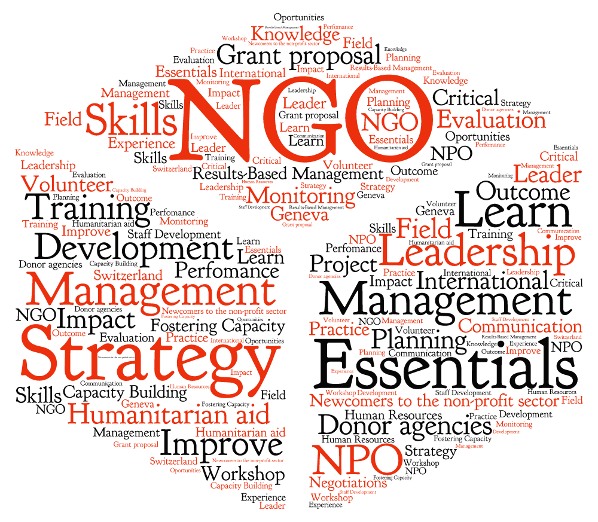

What we do?
The acronym NGO stands for non-governmental organization. With only slightly more specificity, an NGO is any organization, usually non-profit, that operates independently of a government. Contrary to common usage, the NGO title does not necessarily imply the organization works abroad; NGOs can be local, national, or international.
The innumerable NGOs that are working on international humanitarian issues suggest that NGOs can adapt quickly and respond to changing needs faster than government organizations which require executive and electoral approval for action. The Global Journal published a list of the top 100 most influential and effective NGOs, acknowledging famous groups such as OxFam, PATH, and Medicins Sans Frontiers.
These groups’ acclaim comes from consistent and well-organized delivery of critically important services such as medical care, environmental education and advocacy, and human rights protection.
